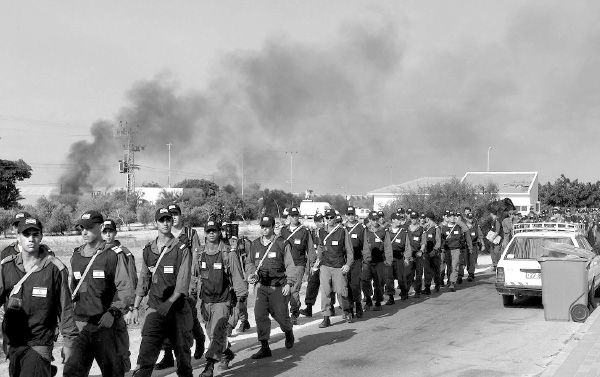
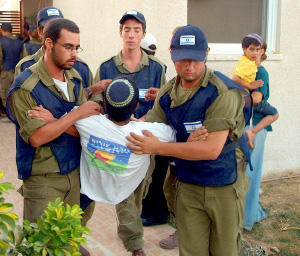

The Wound Still Festers
Housing and Construction Minister Uri Ariel stood on the podium for several minutes, unable to speak as his voice was choked with tears. After he managed to compose himself, he related his personal experiences, or better put, the horrible experiences of those tragic days… “How cruel can you be?” Ariel cried out as he recalled the incident.
Translated by Michoel Leib Dobry
Photos by Yisroel Berdugo

A couple of weeks ago, the Nitzan settlement and its sizable population of Gush Katif refugees held a ceremony to commemorate eight years since the expulsion. The ceremony took place at the new memorial center established for the former settlements of the Gaza Strip. The founders hope that it will become a focal point for those who never want to forget. Among the invited speakers was the minister of housing and construction, Uri Ariel (Bayit HaYehudi), who was the most dominant Knesset Member in the National Union Party spearheading the battle against the disengagement. Mr. Ariel approached the podium holding a speech he had written in advance, but he was simply too moved to speak. “I had prepared something to say,” the minister began, “but I’m crying instead.”
Minister Uri Ariel stood on the podium for several minutes, unable to say a word as his voice was choked with tears. After he managed to compose himself, he related his personal experiences, or better put, the horrible experiences of those tragic days. He spoke about a telephone conversation with the head of the IDF human resources branch at the time of the expulsion, who refused to allow soldiers with families living in Gush Katif to go there and part from the settlements where they had been raised. “How cruel can you be? What insensitivity?” Ariel cried out as he recalled the incident.
Those minutes when the honored housing minister stood there speechless, sobbing uncontrollably, illustrated how raw and sore the wounds still remain. Not only have they failed to heal, they have festered over the years.
Eight years later, it turns out the government’s handling of the expulsion tragedy was a tragedy unto itself. Many of those driven out of their homes in Gush Katif are still left abandoned in broken-down caravans. The discouraged young people from those days have become a confused and scarred generation. The security conditions for the residents of southern Eretz Yisroel have not improved, and the once thriving settlements are now crawling with terrorists. The Cabinet ministers were quite adept at arranging a meticulous plan for expelling Jews, while showing no pity or consideration for what would happen the day after.
If there had been hope that the pain would subside during those first years after the disengagement, today the picture appears quite different. The horrific scenes, the screams, and the pleas from that summer continue to reverberate, louder than ever before. The prayer of “Hashem, hearken to my prayer, and may my cry come to You; do not hide Your countenance from me on the day of my distress,” continues to accompany the former Gush Katif residents eight years later.
WE WILL NOT FORGIVE

We all remember Mr. Ben-Yishai from the scene when the Jews were removed from the synagogues of Neve Dekalim, as he took the microphone and proclaimed the terrifying words: “The time for evacuation has arrived.” The young people who were there recall that terrible announcement as the sign to rend their garments with the bracha of “Baruch…Dayan HaEmes”, as instructed by the local rabbanim. The words still resound: “This is Brigadier General Meir Ben-Yishai, commander of the evacuation forces. The time for evacuation has arrived. In another ten minutes, the forces will enter and they will begin to evacuate the synagogues.”
As the chilling message blared over the loudspeakers outside, an atmosphere of total chaos and heartrending cries reigned inside. The plea of “A prayer for a poor man when he enwraps himself and pours out his speech before G-d” could be heard from within one of the shuls, followed by the traditional justification of Divine judgment – Tziduk HaDin – “Hashem Hu HaElokim!” From another shul came the melodic Slichos prayer, “Our Father, our King, be gracious to us and answer us, for we have no meritorious deeds, deal charitably and kindly with us and deliver us.” These moments have been etched in the historical memory banks of that period, symbolizing the terrible depravity of a Jewish government evicting Jews from synagogues.
However, Mr. Meir Ben-Yishai does not regret his actions. He’s even quite proud of what he’s done. From his standpoint, he did the right thing when he took on the assignment, and he is certain that he carried it out “with compassion and with resolve,” as he put it. While Ben-Yishai remembers those days quite clearly, he still chose to commemorate the anniversary of the expulsion by going to Yerushalayim to visit the Gush Katif Museum. However, it wasn’t his need to remember those terrible memories that brought him there, rather his desire to clear his name and his conscience from his part in the destruction. Although he adamantly refused to express any regret or even ask forgiveness for his role in the tragedy, he still wanted to restore his reputation, as he tersely sought to vindicate himself: “I’m sorry if I offended anyone – I hope that I did things with compassion and with resolve.”
Mr. Ben-Yishai has apparently forgotten that the Jewish People can neither forget nor forgive. Judaism has certain rules on asking forgiveness: regret for the past and acceptance of the future. As long as Ben-Yishai remains pleased with his appalling deeds, he is unfit to be forgiven. Anyone who helps to purge him of his responsibility by explaining how he feels the pain of the Gush Katif settlers is merely laying the groundwork for the next expulsion. When these same people emerge victorious from ch”v yet another act of unspeakable destruction, they will receive renewed legitimacy as they smile in our direction.
After Operation Peace for the Galilee, when leading figures in the Israeli Government prevented the conquest of Beirut and victory on the battlefield, the Rebbe called for them to be publicly disgraced by name, in order that others will hesitate to follow the same policies next time around. The situation today is quite similar, as those who commanded the expulsion forces are unwilling to ask forgiveness, although they wish to be absolved.
It seems that one of the strategic errors committed by those faithful to the cause of Eretz Yisroel was how fast they were prepared to forgive those who participated in the crime of evacuating Yamit. They quickly exonerated the defense minister serving at the time, warmly embracing him as the man prepared to build throughout Yehuda and Shomron. As the years passed, that defense minister became the prime minister who destroyed the settlements of Gush Katif and the northern Shomron.
REMEMBERING WITH A LOOK TOWARDS THE FUTURE
The Rebbe taught us that remembering the destruction of the Beis HaMikdash doesn’t just mean crying over our historic loss. We have to remember the past while looking towards the future, in order to build the Third Beis HaMikdash and live the Redemption. Similarly, we find with recalling the destruction of Gush Katif. The purpose is not merely to intensify the feeling of anguish, but to remember with a look towards the future – to prevent another disastrous expulsion of Jews from their homeland.
Each year, as the tragic anniversary approaches, the sights and sounds from that catastrophic time come before us again. However, these painful memories must have a clear purpose: to do everything possible to ensure that such a calamity will never happen again.
U.S. Secretary of State John Kerry recently visited Eretz Yisroel for yet another round of discussions on the “peace talks” and more withdrawals. We must keep the visions of Gush Katif at the forefront of our minds in order to take action – with compassion and with resolve – to thwart any diplomatic initiatives on further territorial compromises that place the security of millions of Jews at serious risk.
Only eight years have passed since the terrible expulsion, and people are openly talking again about uprooting settlements. The current prime minister must know that the country will not allow him to do that again. The nation of Israel must remain forever mindful of the Gush Katif tragedy, and its grave consequences can never be forgotten. It’s not enough just to remind ourselves of the expulsion and its dangerous security implications. We must take action to instill this awareness within the Jewish People.
LEARNING ABOUT YIDDISHKAIT TO PREVENT THE NEXT EXPULSION
On a recent Shabbos in my home, I hosted a soldier who had served in the regular army during that period in one of the units closest to the scene of action within the actual disengagement forces. I asked him how it didn’t bother him to be a part of such a dreadful operation. His straightforward answer was that he simply didn’t think about it. He and his army buddies looked upon the whole thing as a pleasant camping trip away from their routine duties. Instead of engaging in tedious activities on the base, they went out for a few weeks for psychological training on how to take small children out of the arms of their parents, and then enjoyed a week in Gush Katif.
Despite all the unbearable anguish caused by the disengagement, the soldiers were in an entirely different frame of mind. While we were screaming “A Jew doesn’t expel another Jew,” they had no idea what we were talking about. What expulsion? What destruction?
If the soldiers had understood what Judaism is really all about and the connection between a Jew and his Creator, they wouldn’t have acted in such a manner. Yet, they saw no problem with what they were doing, since they had no concept of the true meaning of the Torah of Moshe, Eretz Yisroel, faith in Alm-ghty G-d, and the People of Israel. The responsibility for this situation lies squarely upon our shoulders, and each year when we commemorate the expulsion, we must recall the words of former Gush Katif Chabad House director Rabbi Yigal Kirschenzaft, who said “If the soldier would have known a little more about Yiddishkait, he never would have driven the settlers out…”
Sholom Ber Crombie. "The Wound Still Festers." Beis Moshiach, no. 889 (July 25, 2013).